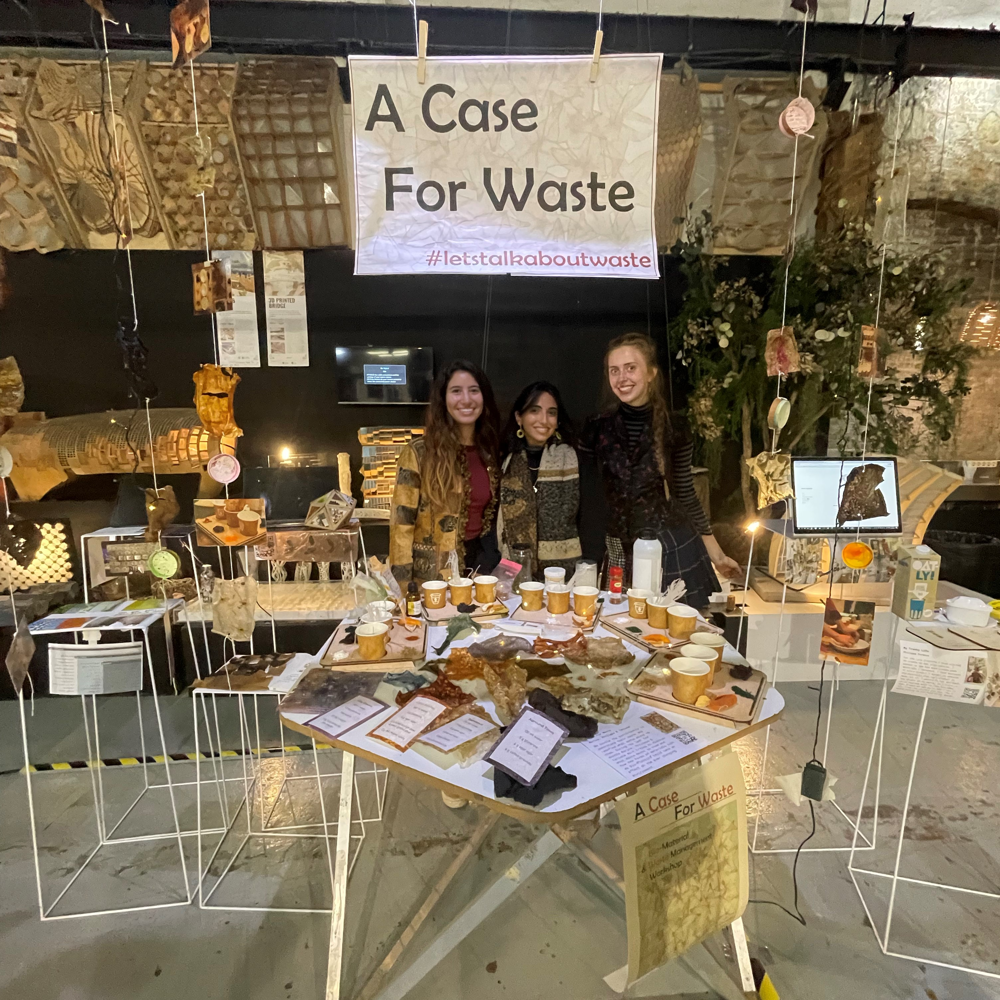

Class
MDEF
Date
21 December 2021
Attendees
MDEF Students & Faculty, FabLab Employees, Professionals
Design Dialogues Event
Going into the design Dialogues event, I was really nervous about how it would go, what it should look like, and how it would all come together. As we began set-up as a class, I saw it coming together quickly and got excited. We constructed a curtain-like installation for our stand with biomaterials and pictures, and laid out all of our materials from the design intervention as well as our individual design spaces. My team of A Case For Waste rotated who got to be visitors of the exhibition and who remained at our stand and interacted with visitors. I have to say that I really enjoyed both roles.
First term exhibition
I started out going around to all of the varying groups. It felt really good to actually get to see what my classmates had been up to during the last weeks of the term and interact with their projects. I enjoyed asking them questions about their projects and taking an active part with them, whether it be adding my storyline for the Aprendizaje Emocionante group, filling in a sheet for Angel’s tooling discovery, touching the musical plants, playing with Anna and Kai’s electronic biomaterial sensors, or trying the dips from conversations maduras. I thought the room came out very visually stunning and felt a very good energy from the room. It was interesting to see the broad array of varying interests my classmates hold, each with their own spin on the topics and groups they were in.

Being the representative at my stand was cool because I got the chance to speak to people about our project and explain to them what we had done and why. As classmates came around, I felt proud to show them what we had done after all only getting a glimpse into each other’s projects. We got the chance to speak to multiple professionals and professors. By the end of the day, I became really comfortable speaking about the project. I also felt encouraged and confident about the outcome of our intervention. Pippa and I had a conversation with Isabelle Ordonez, a professor at Elisava who had done a PhD concerning waste management, that aligned with what we were trying to discuss. While we were a bit intimidated speaking with her about a topic she was very well informed about, I think we felt validated with our ideas and train of thoughts. We also spoke with Oscar who prompted us to think about where we would like to take the project next and what impact it would have, and how getting involved with other people and groups would be helpful. Speaking with Jonathan made me realize I should have faith in my ideas and direction I’m heading, whether or not it means sticking exactly with the group I’m currently working with and how it is important for us to go where we’re inspired.
Overall, design dialogues left me feeling very inspired. I feel lucky to be immersed in a space with so many individuals that are curious, innovative, intelligent, and open. I wish that more outside people from the community could have been able to attend to see what we were all working on.